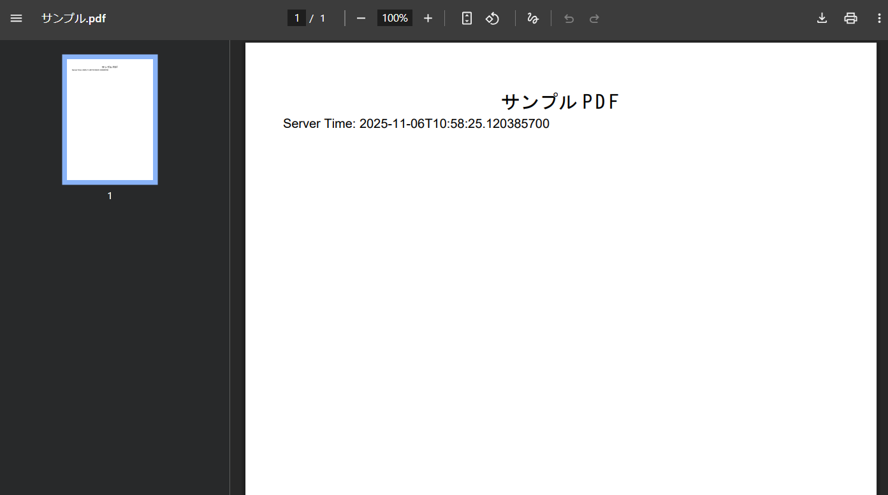
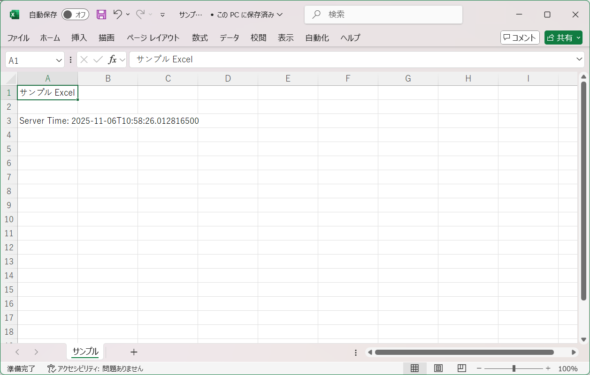

4.11. ファイルダウンロード¶
4.11.1. Overview¶
DispatcherServletは、コントローラへファイルダウンロードのリクエストを送信する。
コントローラは、ファイル表示の情報を取得する。
コントローラは、Viewを選択する。
ファイルレンダリングは、Viewで行われる。
本ガイドラインでは、共通ライブラリから提供しているorg.terasoluna.gfw.web.download.AbstractFileDownloadViewを継承したカスタムViewを実装することを推奨する。
4.11.2. How to use¶
4.11.2.1. ViewResolverの設定¶
org.springframework.web.servlet.view.BeanNameViewResolverが以下のように設定されている。SpringMvcConfig.java
@EnableAspectJAutoProxy
@EnableWebMvc
@Configuration
public class SpringMvcConfig implements WebMvcConfigurer {
// omitted
@Override
public void configureViewResolvers(ViewResolverRegistry registry) {
registry.beanName(); // (1)
registry.jsp("/WEB-INF/views/", ".jsp");
}
項番 |
説明 |
|---|---|
(1)
|
ViewResolverRegistry#beanNameを呼び出し、BeanNameViewResolverを定義する。JSP用の
ViewResolverより先に定義することで、BeanNameViewResolverの優先度を高くする。 |
SpringMvcConfig.java
@EnableAspectJAutoProxy
@EnableWebMvc
@Configuration
public class SpringMvcConfig implements WebMvcConfigurer {
// omitted
@Override
public void configureViewResolvers(ViewResolverRegistry registry) {
registry.beanName(); // (1)
registry.viewResolver(thymeleafViewResolver());
}
@Bean
public ThymeleafViewResolver thymeleafViewResolver() {
// omitted
}
項番 |
説明 |
|---|---|
(1)
|
ViewResolverRegistry#beanNameを呼び出し、BeanNameViewResolverを定義する。Thymeleaf用の
ViewResolverより先に定義することで、BeanNameViewResolverの優先度を高くする。 |
spring-mvc.xml
<mvc:view-resolvers>
<mvc:bean-name /> <!-- (1) -->
<mvc:jsp prefix="/WEB-INF/views/" />
</mvc:view-resolvers>
項番 |
説明 |
|---|---|
(1)
|
<mvc:bean-name>要素を使用して、BeanNameViewResolverを定義する。JSP用の
ViewResolverより先に定義することで、BeanNameViewResolverの優先度を高くする。 |
spring-mvc.xml
<mvc:view-resolvers>
<mvc:bean-name /> <!-- (1) -->
<bean class="org.thymeleaf.spring6.view.ThymeleafViewResolver">
<!-- omitted -->
</bean>
</mvc:view-resolvers>
項番 |
説明 |
|---|---|
(1)
|
<mvc:bean-name>要素を使用して、BeanNameViewResolverを定義する。Thymeleaf用の
ViewResolverより先に定義することで、BeanNameViewResolverの優先度を高くする。 |
Note
Spring FrameworkはさまざまなViewResolverを提供しており、複数のViewResolverをチェーンすることができる。
ただし、読み込み順によっては意図しないViewが選択されてしまうことがある。
この動作は、<mvc:view-resolvers>要素の子要素やViewResolverRegistryに、優先したいViewResolverを上から順に定義する事で防ぐことができる。
4.11.2.2. ファイルのダウンロード¶
org.terasoluna.gfw.web.download.AbstractFileDownloadViewを継承したクラスを実装する。AbstractFileDownloadViewでは、以下を実装する必要がある。レスポンスボディへの書き込むためのInputStreamを取得する。
HTTPヘッダに情報を設定する。
4.11.2.2.1. カスタムViewの実装¶
AbstractFileDownloadViewを継承したクラスの実装例
@Component // (1)
public class TextFileDownloadView extends AbstractFileDownloadView { // (2)
@Override
protected InputStream getInputStream(Map<String, Object> model, HttpServletRequest request)
throws IOException { // (3)
Resource resource = new ClassPathResource("testdata/サンプル.txt");
return resource.getInputStream();
}
@Override
protected void addResponseHeader(Map<String, Object> model, HttpServletRequest request,
HttpServletResponse response) { // (4)
String encodedFileName = URLEncoder.encode("サンプル.txt", StandardCharsets.UTF_8);
String contentDisposition =
String.format("attachment; filename*=UTF-8''%s", encodedFileName);
response.setCharacterEncoding("UTF-8");
response.setHeader("Content-Disposition", contentDisposition); // (5)
response.setContentType("text/plain"); // (6)
}
}
項番 |
説明 |
|---|---|
(1)
|
本例では、
@Componentアノテーションを使用して、component-scanの対象としている。前述した、
org.springframework.web.servlet.view.BeanNameViewResolverの対象とすることができる。 |
(2)
|
AbstractFileDownloadViewを継承する。 |
(3)
|
getInputStreamメソッドを実装する。ダウンロード対象の、
InputStreamを返却すること。 |
(4)
|
addResponseHeaderメソッドを実装する。ダウンロードするファイルに合わせた
Content-DispositionやContentTypeを設定する。 |
(5)
|
Content-Dispositionを設定する。上記例では、
attachment; filename*=UTF-8''サンプル.txtを指定しているため、サンプル.txtというテキストファイルがダウンロードされる。設定可能な値はContent Disposition Values and Parametersを参照されたい。
|
(6)
|
4.11.2.2.2. ControllerでのViewの指定¶
BeanNameViewResolverにより、コントローラでtextFileDownloadViewを返却することで、Springのコンテキストで管理されたBeanIDがtextFileDownloadViewのViewが使用される。Javaソース
@GetMapping(value = "download")
public String download() {
return "textFileDownloadView"; // (1)
}
項番 |
説明 |
|---|---|
(1)
|
textFileDownloadViewをメソッドの戻り値として返却することで、Springのコンテキストで管理されたTextFileDownloadViewクラスが実行される。 |
4.11.3. Appendix¶
4.11.3.1. 動的に生成したファイルのダウンロード¶
AbstractFileDownloadViewは、静的なファイルだけではなく動的に生成したファイルをダウンロードさせる場合にも利用できる。4.11.3.1.1. PDFファイルの動的な生成¶
PDFのレンダリングにOpenPDFを利用する例を紹介する。
4.11.3.1.1.1. OpenPDFを使用するための設定¶
pom.xmlに OpenPDFの定義を追加する。
<dependencies>
<!-- omitted -->
<dependency>
<groupId>com.github.librepdf</groupId>
<artifactId>openpdf</artifactId>
<version>${OPENPDF_VERSION}</version>
</dependency>
</dependencies>
4.11.3.1.1.2. カスタムViewの実装¶
@Component
public class SamplePdfView extends AbstractFileDownloadView { // (1)
@Inject
private PdfHelper pdfHelper; // (2)
@Override
protected InputStream getInputStream(Map<String, Object> model, HttpServletRequest request)
throws IOException {
return pdfHelper.createPdf(model); // (2)
}
@Override
protected void addResponseHeader(Map<String, Object> model, HttpServletRequest request,
HttpServletResponse response) {
String encodedFileName = URLEncoder.encode("サンプル.pdf", StandardCharsets.UTF_8);
String contentDisposition =
String.format("attachment; filename*=UTF-8''%s", encodedFileName);
response.setCharacterEncoding("UTF-8");
response.setHeader("Content-Disposition", contentDisposition); // (3)
response.setContentType("application/pdf"); // (4)
}
}
項番 |
説明 |
|---|---|
(1)
|
AbstractFileDownloadViewを継承したカスタムViewクラスを実装する。 |
(2)
|
PDFファイルを生成するためのヘルパークラスを利用する。
ヘルパークラスの実装例は後述する。
|
(3)
|
Content-Dispositionを設定する。上記例では、
attachment; filename*=UTF-8''サンプル.pdfを指定しているため、サンプル.pdfというPDFファイルがダウンロードされる。 |
(4)
|
ContentTypeを設定する。PDFファイルとして扱うため、
application/pdfを指定している。 |
4.11.3.1.1.3. ヘルパークラスの実装¶
modelに設定されたserverTimeをPDFに出力する単純な例となる。import java.io.ByteArrayInputStream;
import java.io.ByteArrayOutputStream;
import java.io.IOException;
import java.io.InputStream;
import java.util.Map;
import org.springframework.stereotype.Component;
import com.lowagie.text.Document;
import com.lowagie.text.DocumentException;
import com.lowagie.text.Element;
import com.lowagie.text.Font;
import com.lowagie.text.PageSize;
import com.lowagie.text.Paragraph;
import com.lowagie.text.Phrase;
import com.lowagie.text.pdf.BaseFont;
import com.lowagie.text.pdf.PdfWriter;
@Component
public class PdfHelper {
public InputStream createServerTimePdf(Map<String, Object> model) throws IOException {
try (ByteArrayOutputStream outputStream = new ByteArrayOutputStream()) {
try (Document document = new Document(PageSize.A4)) { // (1)
PdfWriter.getInstance(document, outputStream); // (2)
document.open();
BaseFont bf = BaseFont.createFont("HeiseiKakuGo-W5", "UniJIS-UCS2-H", false);
Font titleFont = new Font(bf, 18);
Paragraph paragraph = new Paragraph(new Phrase("サンプル PDF", titleFont));
paragraph.setAlignment(Element.ALIGN_CENTER);
document.add(paragraph); // (3)
String serverTime = model.get("serverTime") != null ? model.get("serverTime").toString()
: "Server Time not available";
document.add(new Paragraph("Server Time: " + serverTime)); // (3)
} catch (DocumentException e) {
throw new IOException("Failed to create PDF document", e);
}
return new ByteArrayInputStream(outputStream.toByteArray());
} catch (Exception e) {
throw new IOException("Failed to create PDF document", e);
}
}
}
項番 |
説明 |
|---|---|
(1)
|
Documentを生成する。上記例ではA4サイズのPDFを生成している。
|
(2)
|
PdfWriterのインスタンスを生成し、DocumentとOutputStreamを関連付ける。 |
(3)
|
PDFドキュメントに
Paragraphでテキストを追加する。 |
4.11.3.1.1.4. ControllerでのViewの指定¶
BeanNameViewResolverにより、コントローラでsamplePdfViewを返却することで、Springのコンテキストで管理されたBeanIDがsamplePdfViewのViewが使用される。Javaソース
@GetMapping(value = "sample", params= "pdf")
public String samplePdf(Model model) {
model.addAttribute("serverTime", LocalDateTime.now());
return "samplePdfView"; // (1)
}
項番 |
説明 |
|---|---|
(1)
|
samplePdfViewをメソッドの戻り値として返却することで、Springのコンテキストで管理されたSamplePdfViewクラスが実行される。 |
上記の手順を実行した後、以下に示すようなPDFが生成されダウンロードすることができる。
{kind=link}

Picture - FileDownload PDF¶
4.11.3.1.2. Excelファイルの動的な生成¶
ExcelのレンダリングにApache POIを利用する例を紹介する。
4.11.3.1.2.1. Apache POIを使用するための設定¶
pom.xmlに Apache POIの定義を追加する。
<dependencies>
<!-- omitted -->
<dependency>
<groupId>org.apache.poi</groupId>
<artifactId>poi-ooxml</artifactId>
<version>${POI_VERSION}</version>
</dependency>
</dependencies>
Note
Apache POI 5.1.0 以降のバージョンではApache Log4j v2を依存関係に含んでおり、POIがログ実装としてLog4j 2を直接使用するようになった。
Apache POIで出力されるログをTERASOLUNA Server Framework for Java (5.x)で設定しているSLF4Jでログを出力するためには、log4j-to-slf4jを依存関係に含む必要がある。
<dependencies> <!-- omitted --> <dependency> <groupId>org.apache.logging.log4j</groupId> <artifactId>log4j-to-slf4j</artifactId> </dependency> </dependencies>
なお、Log4j 2を依存関係に含んでいる場合、Apache Commons Logging 1.3のログ実装呼び出し順の関係でSLF4JではなくLog4j 2が優先される可能性があるが、blankプロジェクトから生成されたプロジェクトではcommons-logging.propertiesでSLF4Jを優先的に呼び出すように設定しているため、Log4j 2が優先されることはない。
Warning
SLF4J adapter (log4j-to-slf4j) とSLF4J bridge (log4j-slf4j-impl) を一緒に使用すると、SLF4Jと Log4j 2の間でイベントが際限なくルーティングされてしまうため注意すること。
詳しくは、Log4j 2 to SLF4J Adapterを参照されたい。
4.11.3.1.2.2. カスタムViewの実装¶
@Component
public class SampleExcelView extends AbstractFileDownloadView { // (1)
@Autowired
private ExcelHelper excelHelper; // (2)
@Override
protected InputStream getInputStream(Map<String, Object> model, HttpServletRequest request)
throws IOException {
return excelHelper.createServerTimeExcel(model); // (2)
}
@Override
protected void addResponseHeader(Map<String, Object> model, HttpServletRequest request,
HttpServletResponse response) {
String encodedFileName = URLEncoder.encode("サンプル.xlsx", StandardCharsets.UTF_8);
String contentDisposition =
String.format("attachment; filename*=UTF-8''%s", encodedFileName);
response.setCharacterEncoding("UTF-8");
response.setHeader("Content-Disposition", contentDisposition); // (3)
response.setContentType(
"application/vnd.openxmlformats-officedocument.spreadsheetml.sheet"); // (4)
}
}
項番 |
説明 |
|---|---|
(1)
|
AbstractFileDownloadViewを継承したカスタムViewクラスを実装する。 |
(2)
|
EXCELファイルを生成するためのヘルパークラスを利用する。
ヘルパークラスの実装例は後述する。
|
(3)
|
Content-Dispositionを設定する。上記例では、
attachment; filename*=UTF-8''サンプル.xlsxを指定しているため、サンプル.xlsxというEXCELファイルがダウンロードされる。 |
(4)
|
ContentTypeを設定する。XLSXフォーマットのEXCELファイルとして扱うため、
application/vnd.openxmlformats-officedocument.spreadsheetml.sheetを指定している。 |
4.11.3.1.2.3. ヘルパークラスの実装¶
modelに設定されたserverTimeをEXCELに出力する単純な例となる。import java.io.ByteArrayInputStream;
import java.io.ByteArrayOutputStream;
import java.io.IOException;
import java.io.InputStream;
import java.util.Map;
import org.apache.poi.ss.usermodel.Cell;
import org.apache.poi.ss.usermodel.Row;
import org.apache.poi.ss.usermodel.Sheet;
import org.apache.poi.ss.usermodel.Workbook;
import org.apache.poi.xssf.usermodel.XSSFWorkbook;
import org.springframework.stereotype.Component;
@Component
public class ExcelHelper {
public InputStream createServerTimeExcel(Map<String, Object> model) throws IOException {
try (ByteArrayOutputStream outputStream = new ByteArrayOutputStream();
Workbook workbook = new XSSFWorkbook()) { // (1)
Sheet sheet = workbook.createSheet("サンプル"); // (2)
sheet.setDefaultColumnWidth(12);
Cell titleCell = getCell(sheet, 0, 0);
titleCell.setCellValue("サンプル Excel"); // (3)
String serverTime = model.get("serverTime") != null ? model.get("serverTime").toString()
: "Server Time not available";
Cell timeCell = getCell(sheet, 2, 0);
timeCell.setCellValue("Server Time: " + serverTime); // (4)
workbook.write(outputStream); // (5)
return new ByteArrayInputStream(outputStream.toByteArray());
} catch (Exception e) {
throw new IOException("Failed to create Excel document", e);
}
}
private Cell getCell(Sheet sheet, int rowNumber, int cellNumber) {
Row row = sheet.getRow(rowNumber);
if (row == null) {
row = sheet.createRow(rowNumber);
}
return row.createCell(cellNumber);
}
}
項番 |
説明 |
|---|---|
(1)
|
Workbookを生成する。上記例ではXLSXフォーマットのEXCELファイルを生成している。
|
(2)
|
サンプルシートの作成。 |
(3)
|
A1セルの値として
サンプル Excelを設定。 |
(4)
|
A3セルの値として
Server Time: {serverTime}を設定。 |
(5)
|
Workbookの内容をOutputStreamに書き込む。 |
4.11.3.1.2.4. ControllerでのViewの指定¶
BeanNameViewResolverにより、コントローラでsampleExcelViewを返却することで、Springのコンテキストで管理されたBeanIDがsampleExcelViewのViewが使用される。Javaソース
@GetMapping(value = "sample", params= "excel")
public String sampleExcel(Model model) {
model.addAttribute("serverTime", LocalDateTime.now());
return "sampleExcelView"; // (1)
}
項番 |
説明 |
|---|---|
(1)
|
sampleExcelViewをメソッドの戻り値として返却することで、Springのコンテキストで管理されたSampleExcelViewクラスが実行される。 |
上記の手順を実行した後、以下に示すようなEXCELが生成されダウンロードすることができる。
{kind=link}

Picture - FileDownload EXCEL¶